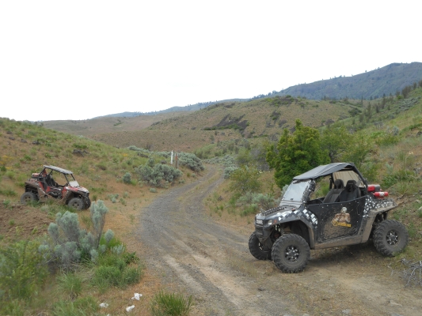

What an Experience...
Using the ArcGIS Experience Builder to Build Custom Applications.
E Bike Mandate


How do we ground truth our data?

In the the past...

What were our requirements?
- Edit Geometries
- Add New Features
- Add Attributes
- Really Simple and Easy to Use
- No custom application development

Experience Builder
- A No-Code Web Page and Application Builder.
- Directly integreates into the ArcGIS Online Ecosystem.
What's different
- Uses the latest ArcGIS JS API 4.0
- Mobile Responsive Development
- Uses modern web framework technologies
- Allows for development of non-map centric and multi-page application development.
So it's like Web App Builder...
- Uses the latest ArcGIS JS API 4.0
- Mobile Responsive Development
- Uses modern web framework technologies
- Allows for development of non-map centric and multi-page application development.
Why did we choose Experience Builder
- Simple Integration with ArcGIS Online
- Can be shared publically with
- Uses modern web framework technologies
- Allows for development of non-map centric and multi-page application development.
Building An Application
Using the Application
Key Takeaways
- Building simple web pages is quick and fun.
- Feature Development is still in progress, some items may not be fully functional
- Custom Styling can get difficult real quick.
- Component state management is still lacking and is fully featured for modern app development.